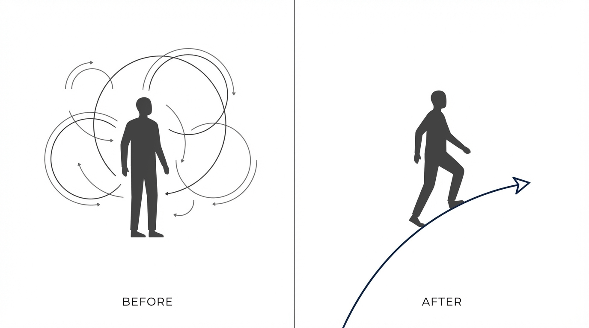

脳のしくみ×経営視点で、本当の意味で人の人生を変えられるプロフェッショナルへ。
【限定5名・無料】※オンライン（Zoom）50分
それはあなたの思いやりの不足でも、クライアントのやる気不足でもありません。
「脳のしくみに基づいた根本解決の型」と「バックエンドの仕組み」の両方が欠けているからです。

総合商社17年で培った「経営・仕組み化の視点」と、900名以上との対話・800ページの図解から生まれた「脳のしくみ」。この2つを掛け合わせることで、クライアントを根本から変え、あなた自身のビジネスも安定させることができます。
■ 総合商社17年 → シリコンバレー → 独立
■ 脳のしくみで「人生の設計図」をつくる
■ 900名が変わった再現性あるしくみ（図解800P）
「Want to 100%で生きる人を増やす」というミッションのもと、単発セッションの限界を感じている対人支援者が、本当の意味で人の人生を変えられるプロになるための伴走サポートを行っています。
| 実施方法 | オンライン（Zoom） |
|---|---|
| 所要時間 | 50分 |
| 参加費 | 無料（プロ層の方への特別なご案内です） |
脳のしくみ×経営視点の「設計図」を手に入れ、
クライアントの人生を根本から動かすプロへ。
※枠が埋まり次第, 今月の受付は終了となります。